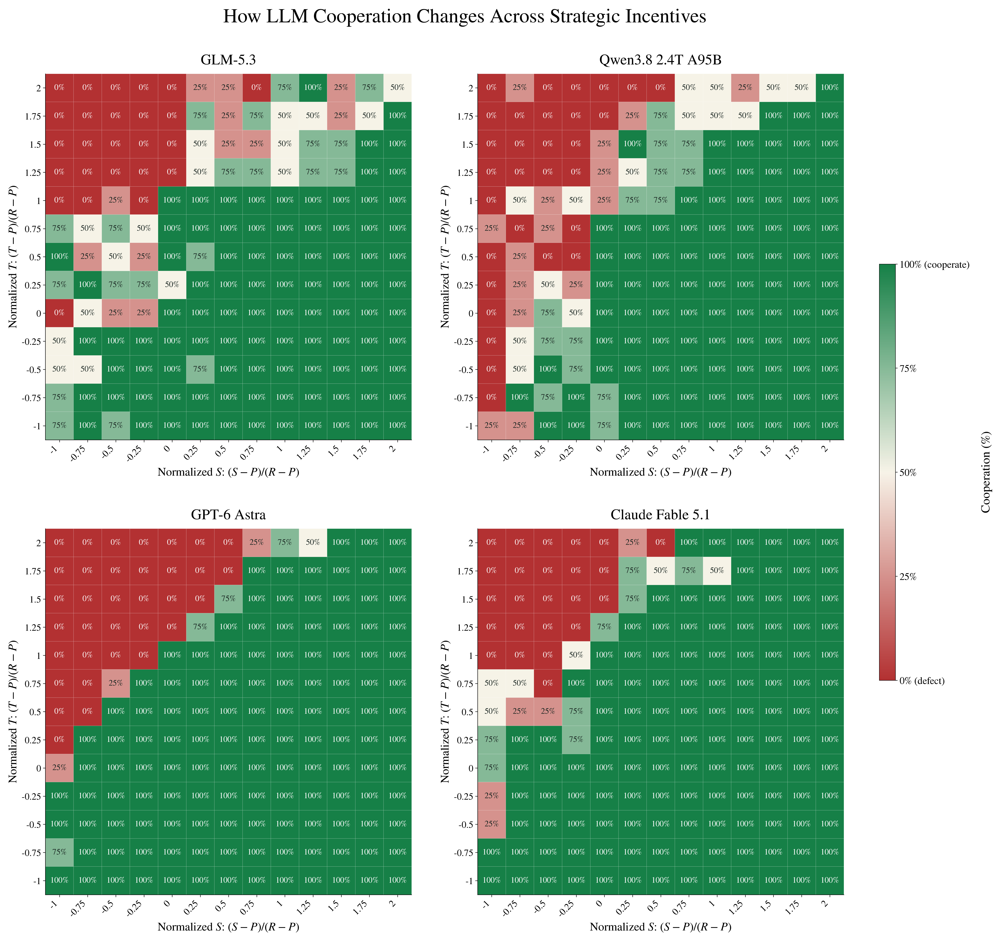
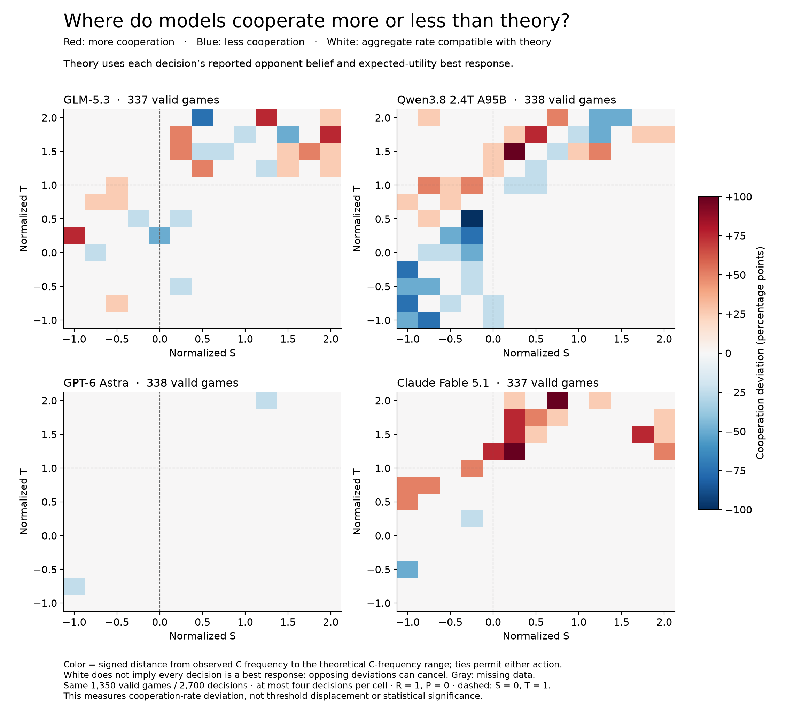
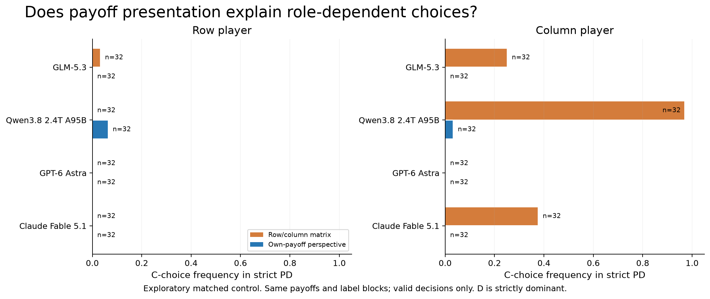

Figures for the post
Four figures: use figures 1 and 2 for the empirical results, figure 3 to explain the theoretical game regions, and figure 4 to show the presentation effect that motivated the clearer-payoff experiment. “Susceptibility” is operationalized here as response to payoff incentives. These are descriptive data with few repeats per cell, not universal model rankings.
Copy-ready captions and methodological limits
Main figure 1: response to payoff incentives
How LLM Cooperation Changes Across Strategic Incentives
Each panel shows one model in isolated, simultaneous self-play. We normalize payoffs to R=1 and P=0, varying S horizontally and T vertically on a 13×13 grid with spacing 0.25. Color is the fraction of individual C choices, averaged within valid joint games: green means all observed choices were C and red means all were D. Each cell is labeled with its observed cooperation percentage; defection is the remainder. Both axes label every tested value, at 0.25 intervals; no interpolation or new trials were used. C and D are analytical labels; prompts used neutral A/B labels, reversed across two blocks. Each cell contains at most two valid games (four decisions). GLM at (S,T)=(0.25,1.25) and Fable at (0.25,1) each have only one valid game. Regime boundaries at S=0 and T=1 separate dominance, coordination, and anti-coordination regions. The clearer own-payoff presentation was an exploratory follow-up. Here “susceptibility” means observed response to payoff incentives, not a safety or manipulation score. Most cells are not strict Prisoner’s Dilemma; strict PD occupies S<0, T>1.
PNG · SVG

Main figure 2: signed cooperation deviation
Cooperation above or below reported-belief best-response predictions
The same 1,350 complete valid games as Figure 1 are shown: GLM 337, Qwen 338, Astra 338, Fable 337 (2,700 decisions). At each normalized S–T cell, theory uses each decision’s reported opponent cooperation belief q and the own-payoff margin Δ=q(1−T)+(1−q)S. Positive Δ favors C, negative Δ favors D, and indifference permits either action. Thus the theoretical aggregate C-rate lies between the fraction strictly preferring C and the fraction not strictly preferring D. Color is 100 times the observed C-rate minus the nearest point in this permitted range: red means excess cooperation, blue means less cooperation, white means aggregate compatibility. For example, +50 means 50 percentage points more cooperation than the upper theoretical bound. White does not establish individual best-response consistency because opposing deviations can cancel. The full signed difference range is exported in threshold_cells.csv. This is a descriptive cooperation-rate deviation map conditional on reported beliefs, not a unique equilibrium prediction, payoff regret, a threshold displacement estimate, or a significance test. It illustrates behavior around utility thresholds but cannot by itself establish how far a threshold moved. Each cell contains at most four decisions; the dashed S=0 and T=1 lines mark strategic regime boundaries. The separate threshold renderer and threshold_displacements.csv retain direct crossing-bracket comparisons for both sweep directions. No new API calls were made.
PNG · SVG

Figure 3: theoretical context
The theoretical phase space of symmetric two-action games
Positive affine normalization maps payoffs to s=(S−P)/(R−P) and t=(T−P)/(R−P), for R>P. This leaves two degrees of freedom and preserves expected-utility incentives. The map shows twelve strict payoff orderings, regime boundaries, and group-payoff boundaries. The repository’s (5,3,1,0) baseline is at (s,t)=(−0.5,2). It is an analytic reconstruction following Falmagne’s SIAM article; no model calls are involved.
PNG · SVG

Figure 4: presentation control
Matrix presentation substantially changes apparent cooperation
The targeted exploratory control compares the same strict-PD payoff cells and first two label blocks under row/column wording and explicit “your payoff / opponent payoff” wording. Each bar contains 32 valid decisions per model and role. Qwen’s column-role C frequency changes from 31/32 to 1/32, while its row-role frequency changes from 0/32 to 2/32. The game utilities and individual-payoff objective are identical, but both payoff perspective and display order change. These observations demonstrate presentation sensitivity without isolating its cause. This control motivated the clearer-presentation grid used in figures 1 and 2.
PNG · SVG

Threshold brackets and differences (CSV) · Source cell values (CSV)